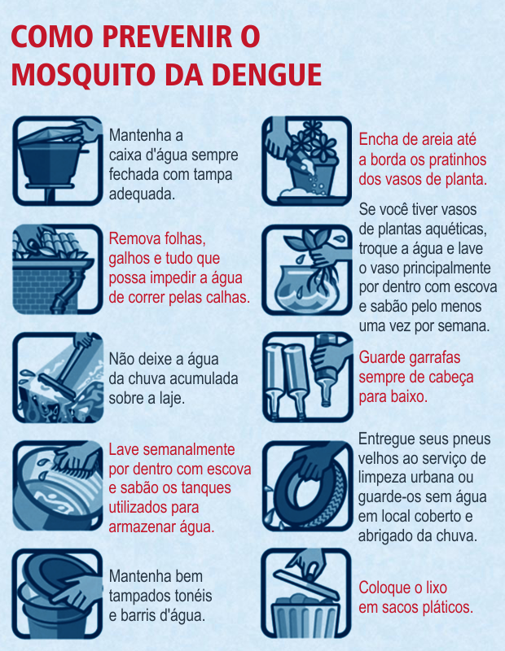

A dengue é uma doença febril aguda causada por vírus, sendo um dos principais problemas de saúde pública no mundo. Muitas vezes, os sintomas do tipo mais leve da doença são confundidos com a gripe, enquanto sua forma mais grave, a dengue hemorrágica, pode levar à morte.
O mosquito Aedes aegypti mede menos de um centímetro, tem aparência inofensiva, cor café ou preta e listras brancas no corpo e nas pernas. Costuma picar, transmitindo a dengue, nas primeiras horas da manhã e nas últimas da tarde, evitando o sol forte, mas, mesmo nas horas quentes, ele pode atacar à sombra, dentro ou fora de casa.
A melhor forma de se evitar a dengue é combater os focos de acúmulo de água, locais propícios para a criação do mosquito transmissor da doença. Para isso, é importante não acumular água em latas, embalagens, copos plásticos, tampinhas de refrigerantes, pneus velhos, vasinhos de plantas, jarros de flores, garrafas, caixas d´água, tambores, latões, cisternas, sacos plásticos e lixeiras, entre outros.
